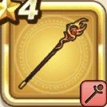

ほのおのつえ
攻略班 5.5点 / ギララリホーべギラマベギラゴン
くわしい特徴
【レベル別習得スキル】 Lv1ギラ（消費MP：8）小さな炎で敵全体にギラ属性の呪文微小ダメージを与える Lv10ラリホー（消費MP：10）敵1体を眠りにさそう Lv20べギラマ（消費MP：14）はげしい炎で敵全体にギラ属性の呪文小ダメージを与える Lv35鳥家へのダメージ+3% Lv45さいだいMP+5 Lv50攻撃力+4 【限界突破スキル】 1凸ギラのダメージ+3% 2凸攻撃魔力+20 3凸ベギラマのダメージ+3% 4凸ベギラゴン